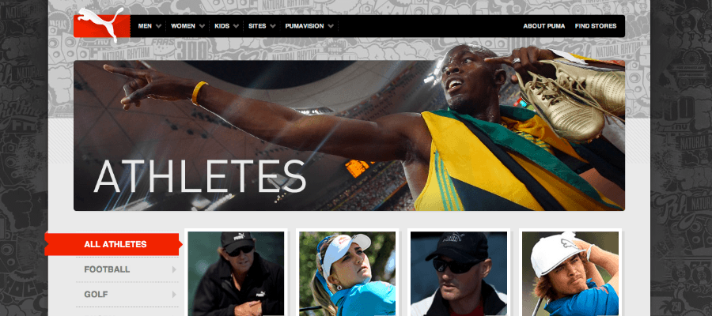
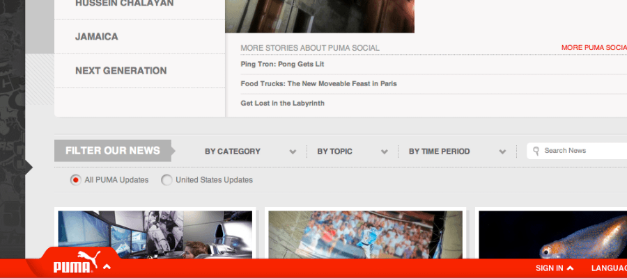
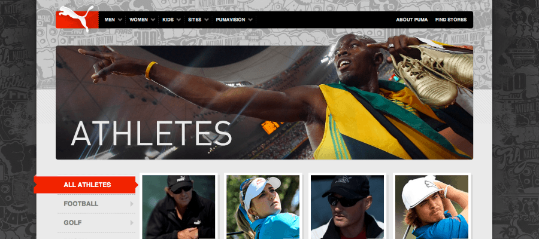
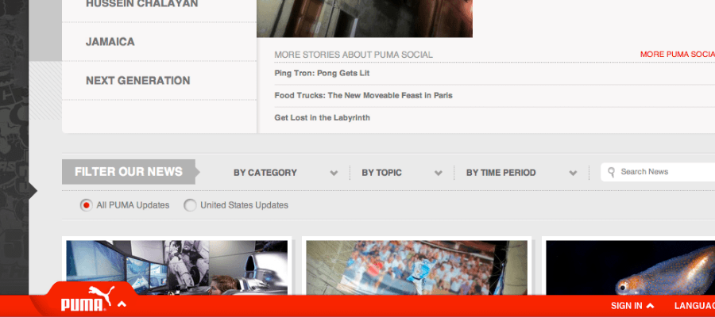

PUMA Sports Marketing Sites Bringing Together A Suite Of Sites And Brand Online
PUMA's online marketing team wanted to bring all of their sport-focused marketing websites together in content strategy, navigation and visual design all without suffocating the initiatives each sport's marketing team was focusing on.
Strategy & Direction from Sound Research
Diving right in, a content and UX audit were carried out to help not only Viget, but also PUMA get a sense of their current online inventory as well as its success. Additionally, a competitive analysis was conducted for PUMA's peers in the industry and findings around online communication, offerings, and functionality informed us of both best practices as well as ways PUMA could differentiate/separate itself from the rest of the pack.
To help capture what was collected during the Research and Strategy phases for reference on future project work and for PUMA's sharing internally, a concept model document was created. This focused on capturing all of the elements that make up the franchises's marketing campaigns, how those flex per franchise, and lastly how a site's information priorities can be tailored based on that.
Thinking Globally
Sketches, then later, Wireframes and design comps were created for the perennial pages and elements, such as products, searching/browsing, and online support which needed to be consistent across PUMA franchise experiences. Additionally, global navigation and use cases on moving freely throughout PUMA's franchises, store, and other offerings were considered.
Common Franchise Work
PUMA wanted to give each franchise Marketing team a starting toolkit to communicate online with. A core set of UI for common pages and content needs were designed. Athletes, events, promotions, and news all needed to be familiar enough to fit into the PUMA family, but also needed to give each franchise some breathing room to make them their own, both in look and feel.
A Sport-by-Sport Basis
To help individual franchises and their supporting Marketing teams communicate what's important to their fans and visitors, interface and information design were tailored for specific fringe, new, and edge cases. Special product, team, and effort/program pages were designed with an eye to what mattered in each specific context.
Scaffolding that Supports Various Content & Design Focuses
Visually, each franchise had to stand on its own and marry its vibe to its specific sport, fans, athletes, events, and scene. The scaffolding the UI design provided allowed the visual design layer to be flexible - picking what visual attributes to keep consistent as well as which ones to incoporate a franchise's personality into.
 



{kind=link}
{kind=link}
{kind=link}
{kind=link}
{kind=link}
{kind=link}
{kind=link}
{kind=link}
{kind=link}
{kind=link}
{kind=link}